Behind Starck Van Lines, a Columbus-area moving company, there is a big, fenced-in area where they've thrown their junk for about twenty-five years. Although it probably doesn't have a name, we call it Crate City, for reasons which should be obvious. The place is huge and filled with assorted junk--mainly old crates of a pretty much uniform size. They're about ten feet high, five feet wide, and eight feet deep, and there must be thousands of them back there, piled and scattered everywhere.
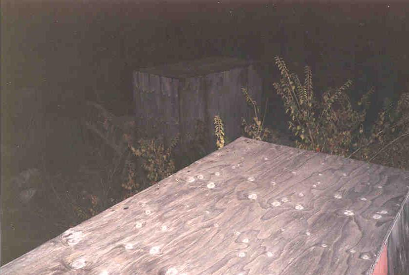
The crates
The place is laid out with a kind of path which runs from the front section around to the back in a hook shape, where it disappears in the greenery. On the inside of that hook shape is the area where the oldest crates are; many of these are crumbling away to sawdust. Still, many of them are intact and piled high. They're older as they go toward the back.
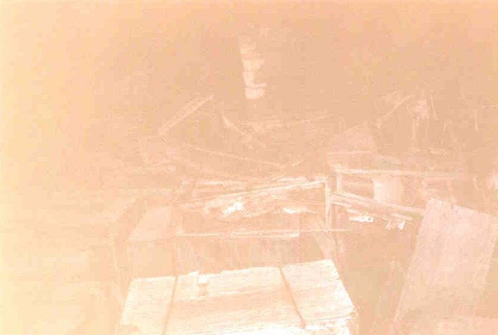
Piles of crates
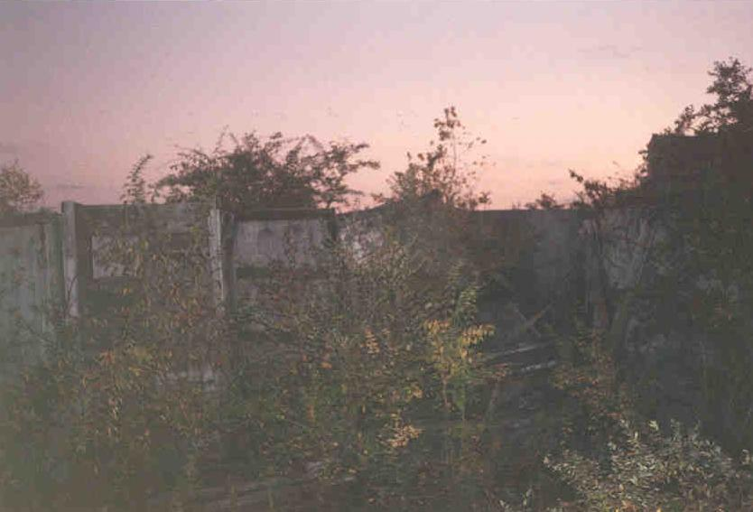
Falling apart
The more recent additions have been placed on the outside of the path, next to the fence. These are stacked two and sometimes three high, with paths between the facing stacks, creating corridors full of chambers like a honeycomb. We've laid pieces of wood from one to another on the second level to make a kind of second floor.
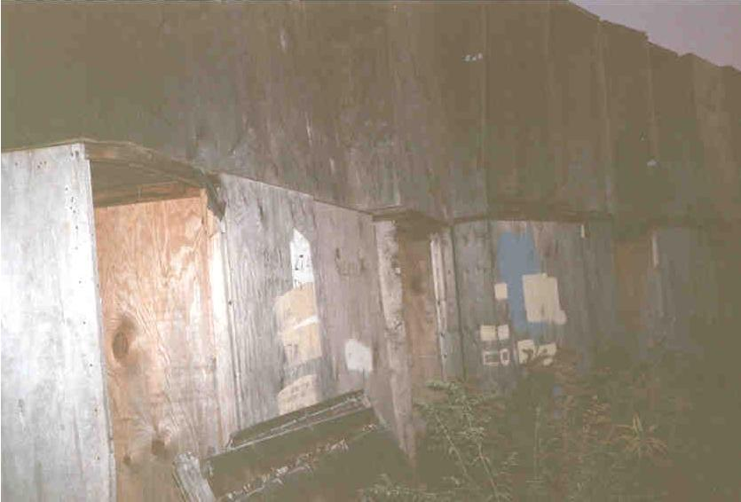
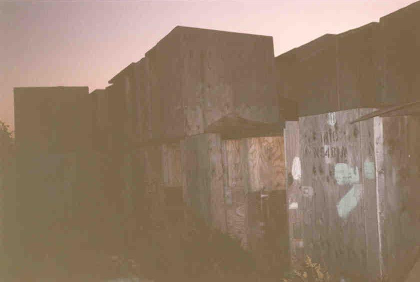
Newer ones
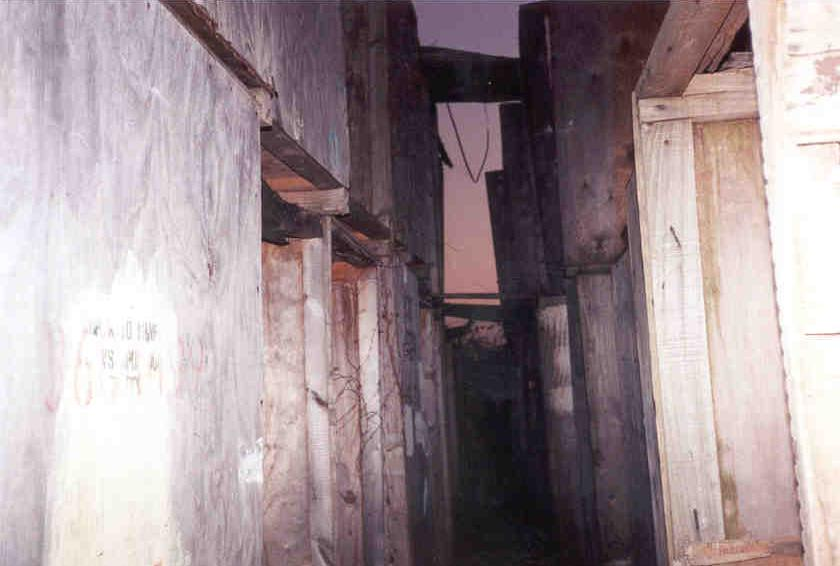
The corridors
The corridors are definitely the coolest thing about Crate City, but the whole place is like a maze. Venturing into the middle is one of the best things to do, but only if you're prepared to spend an hour or two finding your way through.
There is other junk in Crate City besides crates. We've found refrigerators, piles of cinder blocks, metal dumpsters, hot dog vendor signs, wicker baskets, and an ancient, junked pickup truck, to name just a few. And we've probably only scratched the surface.
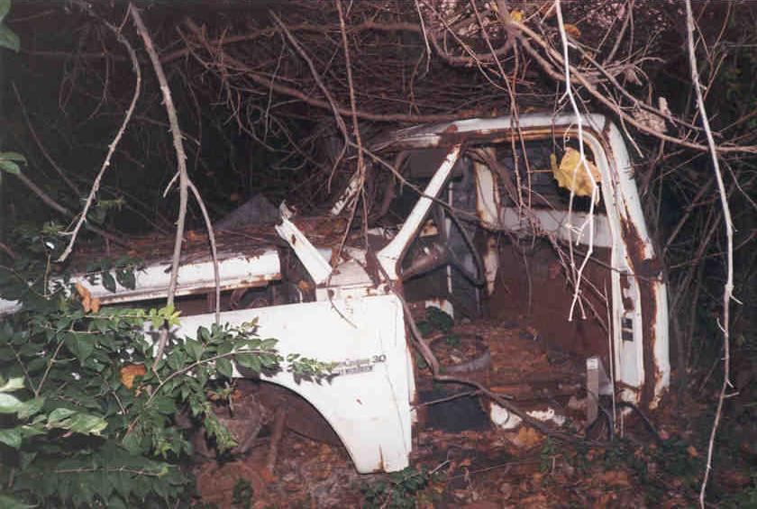
The truck
If you wind your way through the corridors for a while you come to three semi trailers sitting side-by-side, packed with wood. We've been working on emptying these out for a while, but it's a big job. You'll also find a junked camper which has been there since roughly 1978, judging by the signout dates on the old middle school textbooks we found inside. There's lots of crap in the camper, including a sofa, cabinets, glassware, and old papers with some bad poetry written on them.
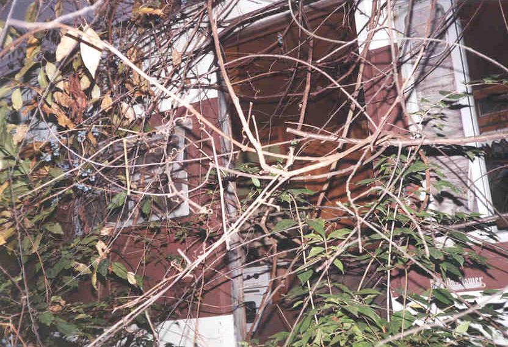
The trailer--outside and inside
There are, obviously, drawbacks. The place is surrounded by a fence topped with barbed wire. It's also heavily entangled with bushes, shrubs, vines, and thorns. And at the very back, where we go in, the oldest crates get in the way. And you have to approach through a field, from the railroad tracks, where impenetrable thorn bushes block your way. Getting in can be a very difficult thing to do, and in the summer it can be almost impossible. A thick jacket, boots, and a machete are recommended gear.
Crate City from a distance
It's also very dangerous. My friend Elvis once crashed through the top of a crate while we were climbing; we all thought he was dead. There is splintery wood everywhere, full of rusty nails and jagged corners, and who knows when the crate you're climbing on might decide to fall over.
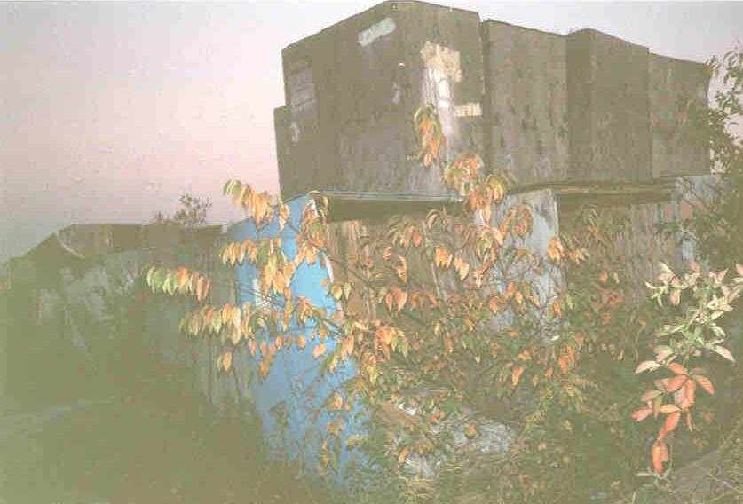
More crates
In spite of all this, the place is awesome. Once you get in it's worth it. It's fairly isolated, allowing you to talk or knock over crates or even hammer nails without worrying about being heard. It's also not known about by many people, which is nice. The people who work at the moving company occasionally throw new crates back there, but that only happens during business hours. We've never even seen anybody else back there, much less been warned or caught. And if you did see somebody, it's not like it'd be hard to hide.
We've gone to Crate City just to hang out, but we've also gone there to play paintball. You couldn't design a better battlefield. When you're alone the place can be pretty creepy. I took these pictures alone, as it was getting dark (which is why the quality's not the greatest), and it was a little unsettling.
UPDATE: I've received several reliable reports that Crate City, which stood behind Starck's storage locker area on Groveport Road in SE Columbus, has been bulldozed and no longer exists in an explorable form. I'll check this up personally as soon as possible, but as of right now (August 2002) I can't confirm that it's still there. With all the housing developments popping up in the area, it doesn't surprise me that such a dangerous place would be gotten rid of. But it still sucks.
 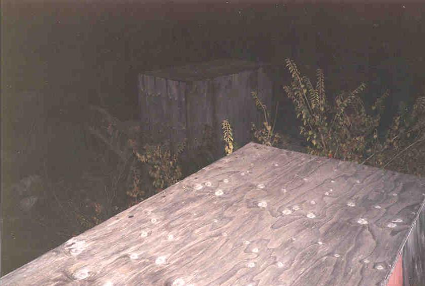
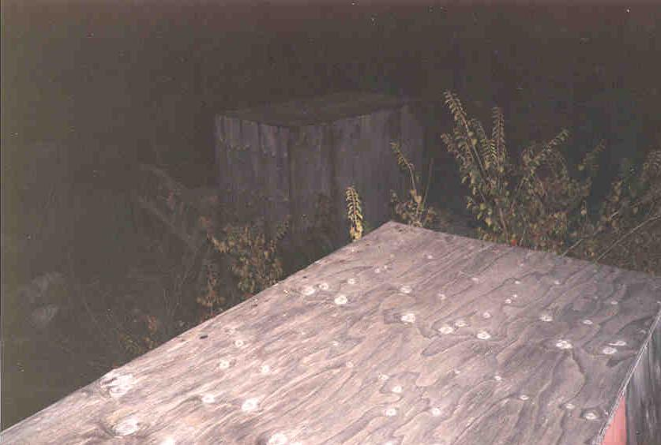


 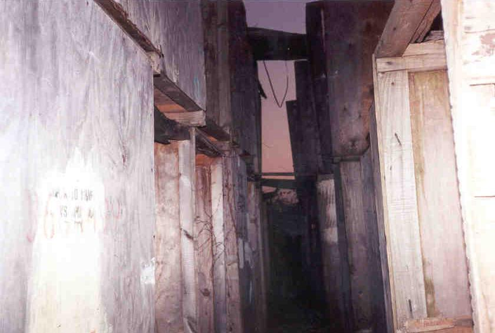
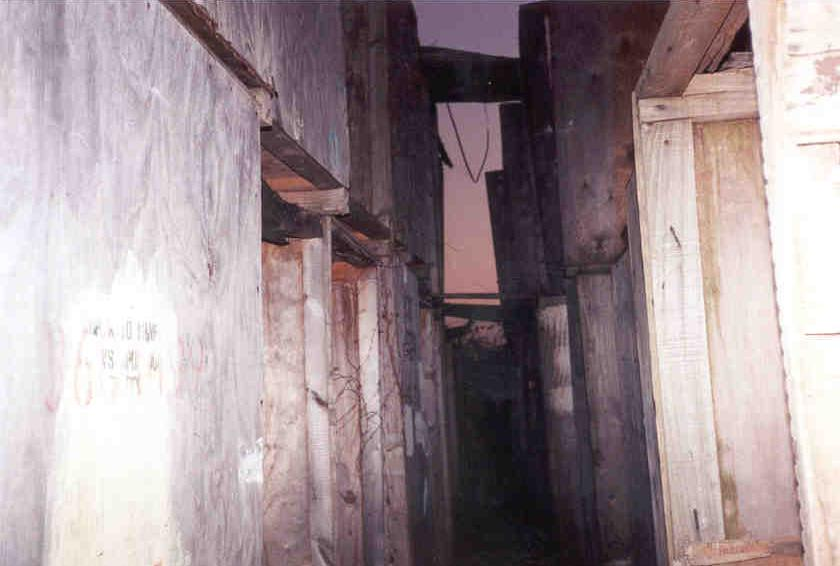